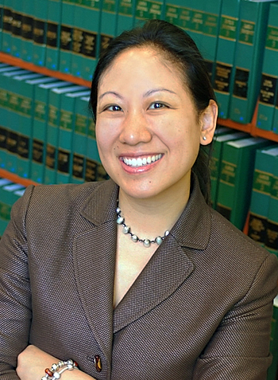

In The Hopes Of Fostering A Better Understanding Of The Ethical Questions We Face As A Community
Legal Workshop
Friday, August 9th
1:00 PM - 2:00 PM
Law Professor Round Robin With Prof. Andrea Matwyshyn, Prof. Stephanie Pell & Prof. Margaret Hu (Washington and Lee Law)
Get an introduction to the hottest open legal issues in the law of security and where three cutting-edge thinkers see the law going
Andrea M. Matwyshyn is a (tenured full) professor in the law school and engineering school at Penn State, the Associate Dean of Innovation at Penn State Law (University Park), and the founding director of the Penn State PILOT Lab (Policy Innovation Lab of Tomorrow), an interdisciplinary technology policy lab. She is also a faculty affiliate of the Center for Internet and Society at Stanford Law School and a Senior Fellow of the Cyber Statecraft Initiative at the Atlantic Council's Brent Scowcroft Center on International Security. In 2014, she served as the Senior Policy Advisor/ Academic in Residence at the U.S. Federal Trade Commission. Prior to becoming an academic, she was a corporate attorney in private practice, focusing her work on technology transactions.
Stephanie Pell is an Assistant Professor and Cyber Ethics Fellow at West Point’s Army Cyber Institute (ACI), with joint appointments to the Department of English and Philosophy and the Department of Law, where she teaches courses in cyber ethics and constitutional and military law. Professor Pell is also an Affiliate Scholar at the Center for Internet and Society at Stanford Law School. Prior to joining the ACI faculty, Professor Pell served as Majority Counsel to the House Judiciary Committee under then Chairman John Conyers, serving as lead counsel on Electronic Communications Privacy Act (ECPA) reform and PATRIOT Act reauthorization during the 111th Congress. Professor Pell was also a federal prosecutor for over fourteen years, working as a Senior Counsel to the Deputy Attorney General, as a Counsel to the Assistant Attorney General of the National Security Division, and as an Assistant U.S. Attorney in the U.S. Attorney’s Office for the Southern District of Florida. She was a lead prosecutor in U.S. v. Jose Padilla (American Citizen detained as an enemy combatant prior to criminal indictment, trial, and conviction on various terrorism charges), for which she received the Attorney General’s Exceptional Service Award, and in U.S. v. Conor Claxton (IRA operatives who purchased weapons in South Florida and smuggled them into Belfast, Northern Ireland during peace process negotiations).

Margaret Hu is an Associate Professor of Law at Washington and Lee University School of Law. Her research interests include the intersection of immigration policy, national security, cybersurveillance, and civil rights. Previously, she served as senior policy advisor for the White House Initiative on Asian Americans and Pacific Islanders, and also served as special policy counsel in the Office of Special Counsel for Immigration-Related Unfair Employment Practices (OSC), Civil Rights Division, U. S. Department of Justice, in Washington, D.C. As Special Policy Counsel, Hu managed a team of attorneys and investigators in the enforcement of the anti-discrimination provisions of the Immigration and Nationality Act (INA), and was responsible for federal immigration policy review and coordination for OSC.
1:00 PM: Keynote
Ethics for Security Practitioners by Enno Rey
While at the first glance infosec might seem to be a mainly technical domain you might encounter ethical dilemmas very soon once you start working in the field (namely when you do offensive stuff). In this talk I'll provide an introduction how to tackle such situations in a structured way and on the basis of common approaches and values.
2:00 PM
Accountability without accountability: A censorship measurement case study by Will Scott
Protecting volunteers from retribution, and why the fear of unknown unknowns is paralyzing to the academic measurement community.
3:00 PM
Responsible Disclosure Panel with Moderato: @bigezy, Panel: @weldpond, @k8emo, @gdead, @vyrus, @slenderman In today's climate of data breaches and information leaks, how do we in the infosec community disclose the vulnerabilities we discover responsibly? Who are we responsible to? Can we set a standard practice that is ethical, fair and effective? These and other questions will be discussed by some familiar faces on our Responsible Disclosure Panel.
4:00 PM
Ethical Disclosure and the Reduction of Harm by Jennifer Leggio
How does a researcher become empowered to influence business and marketing leaders to balance coordinated disclosure, opsec protection, and tradecraft protection, with corporate interests? This talk examines use cases gone wrong, and opportunities for all groups to work together to make it right.
5:30 PM
Patching the CFAA: The New CIAA and “Ethical” Conduct in Security Research by Andrea Matsyshyn
Care about fixing the CFAA? Hear about a new proposal to better protect security research: the Computer Intrusion and Abuse Act. Because the proposal relies on norms/ethics in the security research community, we will debate the hard cases - situations where researcher norms vary.
6:30 PM
Discussion
Saturday, August 11th
11:00 AM
Ethics of Technology in Humanitarian and Disaster Response by Sarah Miller How do we combat the moral dilemmas technology brings to humanitarian and disaster response? Ethically based decision making can improve the influence of technology during a crisis.
1:00 PM
Nations and Nationalism and Cyber Security - Navigating Difficult Relationships in the Private Infosec Space by Joe Slowik When talent comes from intelligence agencies, what masters do we server, who takes priority, and how can companies ensure providers are supporting their interests above past masters? And how have companies muddied the waters so that these questions are relevant in the first place? Some exploration of conflicting duties and possible responses.
3:00 PM
Hack Back: Not An Option, But A Necessity? (A Mini-Workshop) by David Lewis David Scott Lewis “They don’t fear us.” This was General Nakasone’s response to Senator Sullivan’s remark that “we’re the world’s cyber punching bag” during Mr. Nakasone's confirmation hearings as NSA Director and USCYBERCOM Commander. This talk will present hack back as a form of offensive cyber going beyond active defense, persistent engagement, and the cyber kill chain, yet consistent with proposed legislation, and will put forth the claim that nextgen hack back will evolve into a hyperwar battlespace deterrent.Concerns such as attribution and escalation will be addressed, as will the potential role of AI, cybernetics, and quantum computing. A working framework for hack back will be presented – HBaaS/ADaaS (Hack Back-as-a-Service/Active Defense-as-a-Service), as will reasons why culture must play a key role in developing policy options.For illustrative purposes, China and Chinese culture will be examined in depth. This examination will begin with a look at China’s Mearsheimerian foreign relations practices, and will then review how Chinese culture and cultural norms should guide U.S. hack back policies specific to China.
5:00 PM
Diversity and Equality in Infosec with Moderator: @banasidhe, Panel: @snubs, @charlestendell,@dr_war_dog, Guest Moderator: @KeirstenBrager
As the field of Infosec continues to grow in numbers, it is also growing in terms of diversity. Arguably the field needs bring in as many diverse perspectives as possible in order to face ever escalating technological and non-technological challenges. We seek to discuss the ethics of promoting diversity and equality, the ethics of the current methods in promoting diversity and equality, and what can be done to ethically promote diversity and equality in infosec.